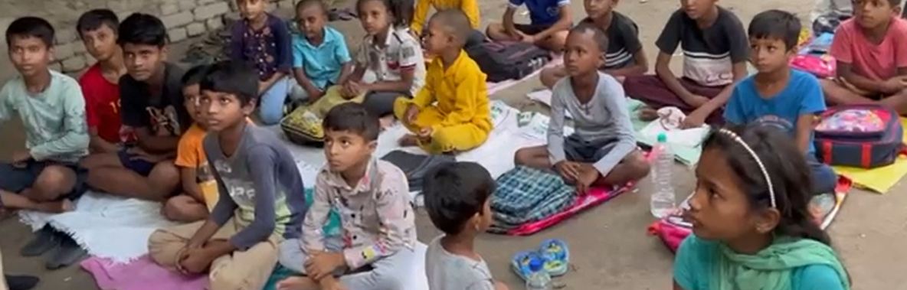

PROGRAM 01
Community food support
Balanced meals and food packages, with an emphasis on locally sourced ingredients and dignified distribution.
See our food program →Young people taking action against hunger through nutritious meals, practical education and community-led solutions.



Annadatri began with a simple belief: young people don’t need to wait to make a difference. Founded by Anusha, the initiative connects immediate food support with long-term nutrition awareness.
Our programs meet urgent needs while helping communities build healthier futures.
Balanced meals and food packages, with an emphasis on locally sourced ingredients and dignified distribution.
See our food program →Helping young people and families understand balanced diets, food preparation and healthier choices.
See our education work →“Seeds of Change” invited students to explore hunger and food insecurity through essays, stories and poetry—turning reflection into public awareness.
Read the entries ↗A student initiative begins with one mission: bridge the gap between food waste and malnutrition.
Ahaarvritti, connecting food donors to NGOs in real time, is recognised at IIT Delhi.
Recognised by 1M1B at the Active Impact Summit at the United Nations in Geneva.
“I couldn’t ignore the hunger I saw around me. Annadatri is my way of turning concern into action.”AnushaFounder, AnnadatriConnect with Anusha ↗